Dipsas
The genus Dipsas (family Colubridae) has 55 species in SnakeList (none venomous), recorded in 20 countries.
- 55species
- 55non-venomous
- 20countries
About the genus
A genus of the family Colubridae (colubrids).
Species
Showing 55 species
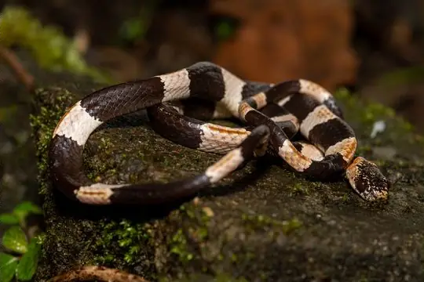
American Snail-eaterDipsas articulata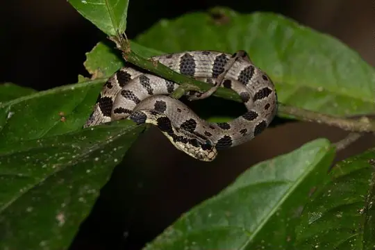
Andean Snail-eaterDipsas andiana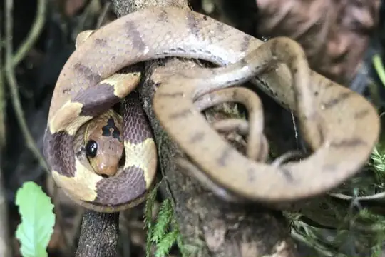
Atlantic Forest Snail-eaterDipsas sazimai- No photo yetBocourt's Snail-eaterDipsas viguieri
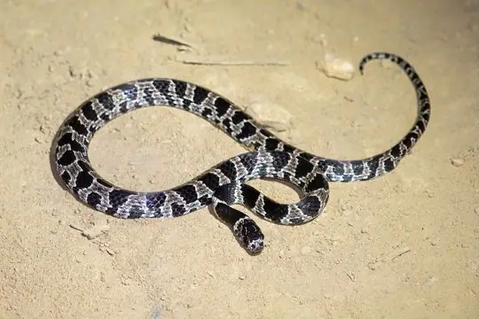
Bolivian Tree SnakeDipsas turgida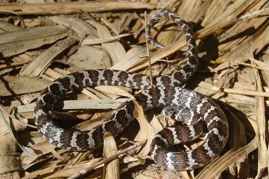
Boulenger's Tree SnakeDipsas ventrimaculata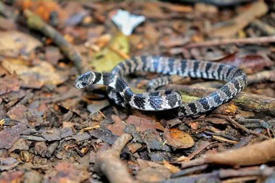
Brazilian Snail EaterDipsas mikanii Catesby's Snail-eaterDipsas catesbyi
Catesby's Snail-eaterDipsas catesbyi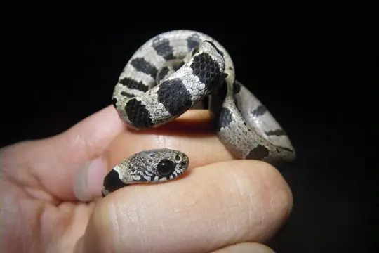
Chapare Snail-eaterDipsas chaparensis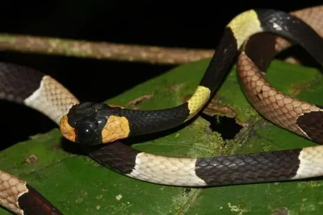
Cope's Snail-eaterDipsas copei- No photo yetDunn's Tree SnakeDipsas vagrans
 Ecuador Snail-eaterDipsas oreas
Ecuador Snail-eaterDipsas oreas El Oro Snail EaterDipsas bobridgelyi
El Oro Snail EaterDipsas bobridgelyi Elegant Snail-eaterDipsas elegans
Elegant Snail-eaterDipsas elegans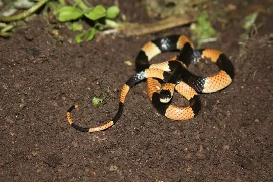
Gaige's Thirst Snail-eaterDipsas gaigeae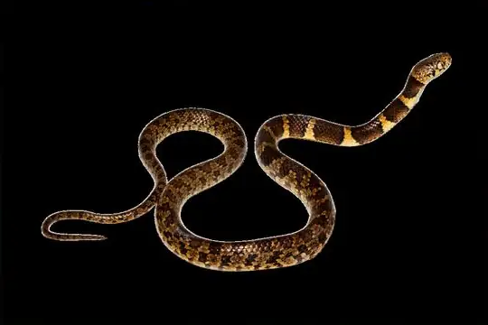
George Jett's Snail-EaterDipsas georgejetti Graceful Snail-eaterDipsas gracilis
Graceful Snail-eaterDipsas gracilis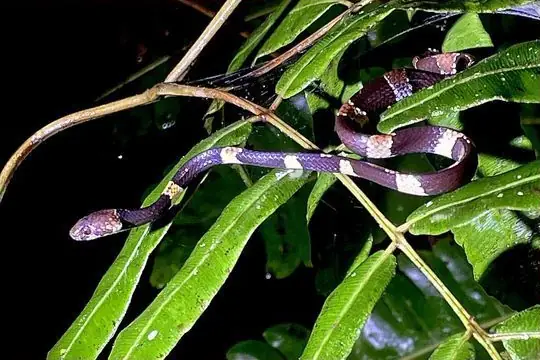
Hidden Snail-eating SnakeDipsas aparatiritos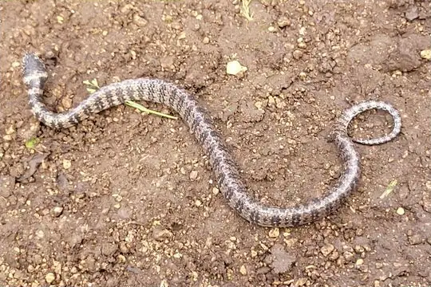
Ibarra Snail-eaterDipsas ellipsifera James Peters's Snail-eaterDipsas jamespetersi
James Peters's Snail-eaterDipsas jamespetersi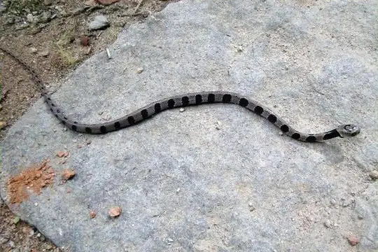
Jan's Snail-eater (alternans)Dipsas alternans- No photo yetJan's Snail-eater (incerta)Dipsas incerta
- No photo yetJan's Tree SnakeDipsas vagus
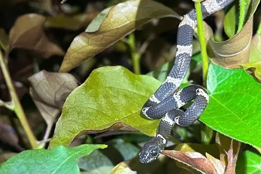
Klebba's Snail-EaterDipsas klebbai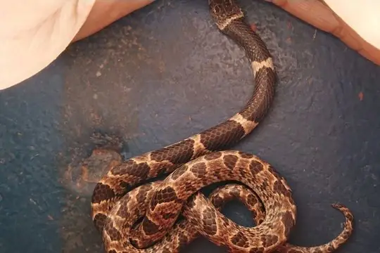
La Villa's Snail-eaterDipsas lavillai- No photo yetMacarena Mountains Snail-eaterDipsas baliomelas
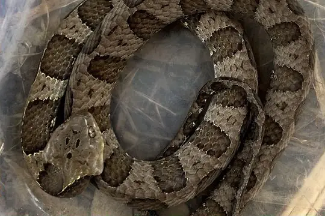
Neotropical Snail-eater (bucephala)Dipsas bucephala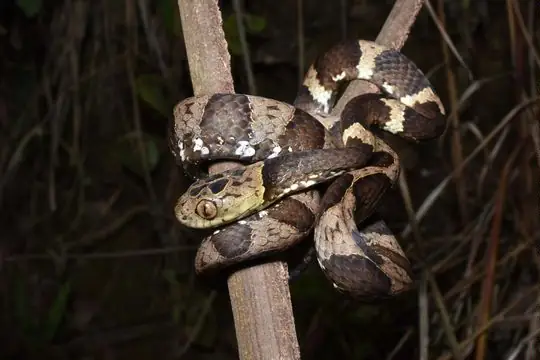
Neotropical Snail-eater (cisticeps)Dipsas cisticeps Neotropical Snail-eater (indica)Dipsas indica
Neotropical Snail-eater (indica)Dipsas indica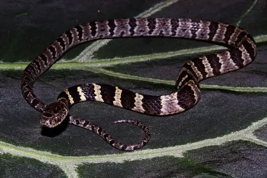
Neuwied's Tree SnakeDipsas neuwiedi- No photo yetNichols' Tree SnakeDipsas nicholsi
 Northern Snail-eaterDipsas pavonina
Northern Snail-eaterDipsas pavonina- No photo yetO'Neill's Tree SnakeDipsas oneilli
- No photo yetOswaldo Báez’ Snail-EaterDipsas oswaldobaezi
- No photo yetPakaraima Snail-eaterDipsas pakaraima
 Palmer’s Snail-EaterDipsas palmeri
Palmer’s Snail-EaterDipsas palmeri Peru Snail-eaterDipsas peruana
Peru Snail-eaterDipsas peruana Pratt's Snail-eaterDipsas pratti
Pratt's Snail-eaterDipsas pratti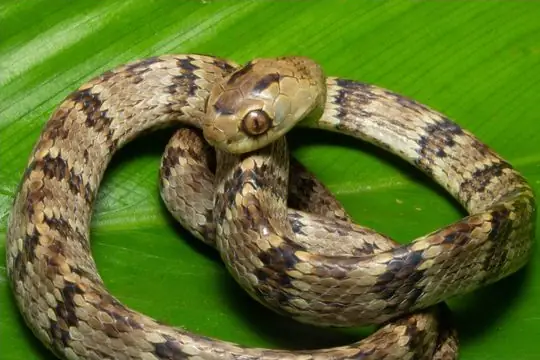
Sauvage's Snail-eaterDipsas albifrons Schunk's Snail-eaterDipsas schunkii
Schunk's Snail-eaterDipsas schunkii- No photo yetSerra do Cariri Snail EaterDipsas bothropoides
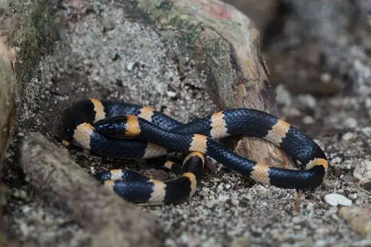
Snail-eating Thirst SnakeDipsas brevifacies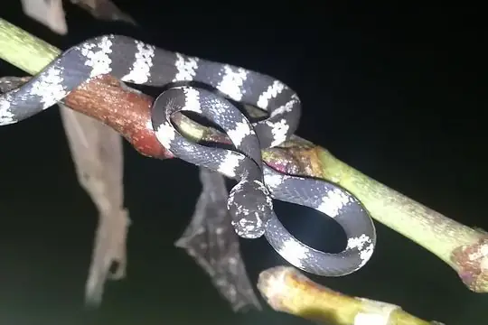
Taylor's SnaileaterDipsas tenuissima Temporal Snail-eaterDipsas temporalis
Temporal Snail-eaterDipsas temporalis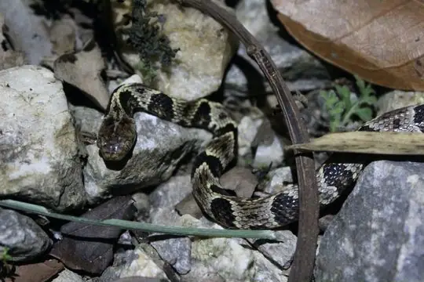
Trinidad Snail-eaterDipsas trinitatis Tropical Snail-eaterDipsas sanctijoannis
Tropical Snail-eaterDipsas sanctijoannis Two-colored Snail-eaterDipsas bicolor
Two-colored Snail-eaterDipsas bicolor Variegated Snail-eaterDipsas variegata
Variegated Snail-eaterDipsas variegata Venezuela Snail-eaterDipsas latifrontalis
Venezuela Snail-eaterDipsas latifrontalis- No photo yetVenezuelan Snail-eaterDipsas praeornata
 Vermiculate Snail-eaterDipsas vermiculata
Vermiculate Snail-eaterDipsas vermiculata Welborn’s Snail-eating SnakeDipsas welborni
Welborn’s Snail-eating SnakeDipsas welborni- No photo yetWerner's Thirst SnakeDipsas maxillaris
 Williams' Tree SnakeDipsas williamsi
Williams' Tree SnakeDipsas williamsi- No photo yetDipsas oligozonata
No snakes in Dipsas match.